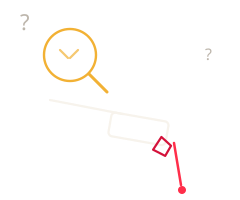

404Esta página se perdió en el proceso
Puede que el enlace esté roto, la página haya cambiado de lugar o nunca haya existido. Pasa que hasta el mejor tatuador se sale de la línea a veces.

404Puede que el enlace esté roto, la página haya cambiado de lugar o nunca haya existido. Pasa que hasta el mejor tatuador se sale de la línea a veces.